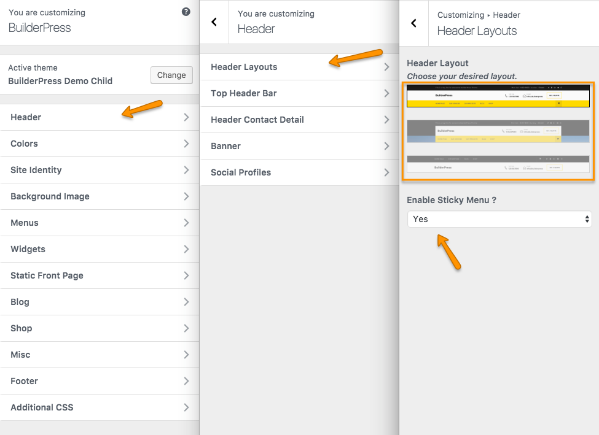
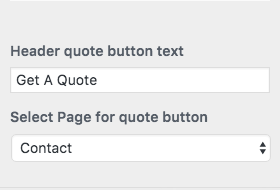
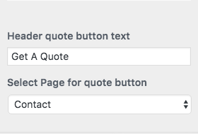
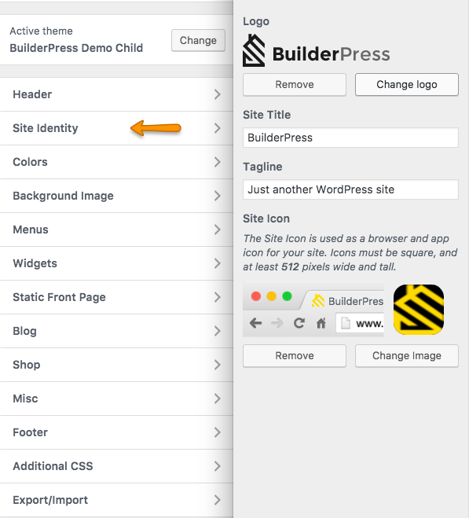
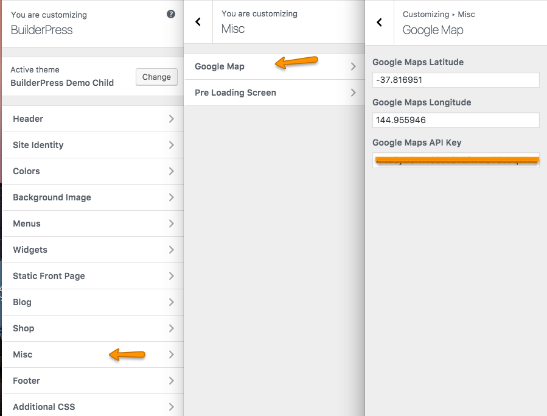
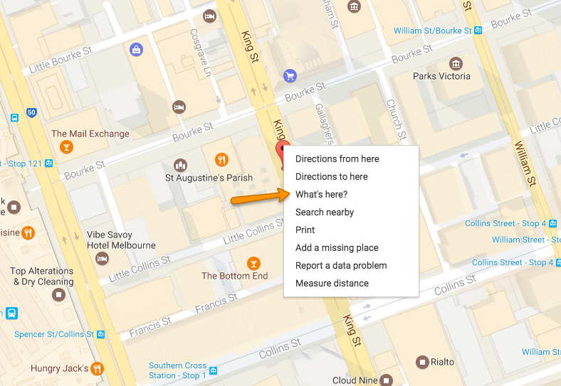

Header Settings
For Customize options go to Appearance > Customize

- Select header layout from Header > Header Layouts 
-
Fill information in Top Header Bar from Header > Top Header Bar

-
Enter Header Contact Detail from Header > Header Contact Detail.
Default icons will be displayed for Phone and Email if no icon is selected.
 Select Button Text and Page to link.

Select Button Text and Page to link.

-
For Banner options go to Header > Banner. Uploaded image will be shown on banner of all inner pages.

-
Enter Social Network details from Header > Social Network. You can Enable/Disbale Social Networks display in Header and Footer.

Site Identity
Select Site Identity to enter Logo, Site Title, Tagline and Site Icon. 
Blog
Enter BLog pages banner title from Blog panel. Default page title will be shown if field is empty.
Shop
Select Shop panel to enter shop pages Banner Image, Title, Title Color and Products per page.

Google Map
Select MISC > Google Map to enter map coordinates and Google Map API key. If you wnat to learn how to get coordinates Click Here. if you want to learn how to get Google Map API Key Click Here. 
How To Get Google Map Coordinates
Follow the steps to get Google Map coordinates.- Open Google Map and go to your desired location.
- Right click on your map location and click on What,s here?. 
-
You will see a box appearing at the bottom of the map with coordinates. Click on these coordinates.

-
After clicking you can see coordinates on left reveal bar of Google Map.

-
Copy These coordinates and paste in Customize Settings MISC > Google Map .

How To Get Google Map API Key
Follow the steps to get Google Map API key
- To generate Google Map API key go to this Link.
-
Click on GET A KEY.

-
Create New or select your project and click on ENABLE API.

-
Your Google Map API is genereated.

-
Copy the generated API key and paste in Customize Settings MISC > Google Map .

Pre Loading Screen
You can enable/disable Page Pre Loader from MISC > Pre Loading Screen .

Footer
- Go to Footer > CTA Bar and setup Call To Action Bar in footer.
- Go to Footer > Footer and enter contents in footer.
Additional CSS
Go to Additional CSS to enter custom styles.